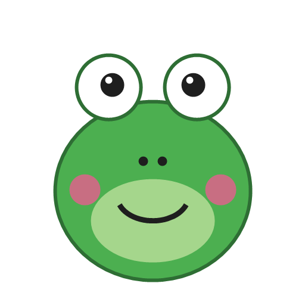
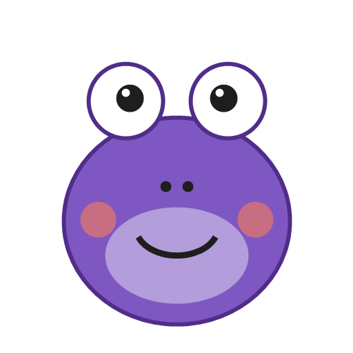

小四數學・互動課堂
3 和 4 是 12 的因數。
12 是 3 的倍數，也是 4 的倍數。
拿來乘的是因數，乘出來的是倍數
把糖果排成好幾排，每排一樣多。如果剛好排完、沒有剩下，排數就是糖果總數的因數。
按一下，試試剛好排完的排法：
| 因數（以 12 為例） | 倍數（以 3 為例） | |
|---|---|---|
| 怎麼找 | 用除法：12 除以它，沒有餘數 | 用乘法：3 × 1、× 2、× 3…… |
| 例子 | 1, 2, 3, 4, 6, 12 | 3, 6, 9, 12, 15, … |
| 大小 | 比自己小，或等於自己 | 比自己大，或等於自己 |
| 有幾個 | 數得完 | 數不完，有無限多個 |
| 最小的 | 1（1 是每個數的因數） | 自己（3 × 1 = 3） |
記住：每個數都是自己的因數，也是自己的倍數。
學生說句子時，請他們先指著算式找「乘出來的數」，再說「＿是＿的倍數」。倒過來再說一次「＿是＿的因數」。同一個算式說兩種句子，最能協助學生分辨。

小青蛙每次跳 3 格。牠停下來的地方，就是 3 的倍數。橘色格子是 3 的倍數。看看它們排成什麼形狀？
用除法檢查：除得盡（沒有餘數）就是倍數。
24 ÷ 3 = 8 沒有餘數 → 24 是 3 的倍數
25 ÷ 3 = 8 … 1 有餘數 → 25 不是 3 的倍數
綠青蛙一次跳 4 格，

紫青蛙一次跳 6 格。兩隻都踩到的數，就是公倍數（共同的倍數）。公倍數有無限多個，其中最小的那一個，叫做最小公倍數。
建議方法：從較大的數開始找。把比較大的數的倍數一個一個列出來，第一個也能被小的數除盡的，就是最小公倍數。